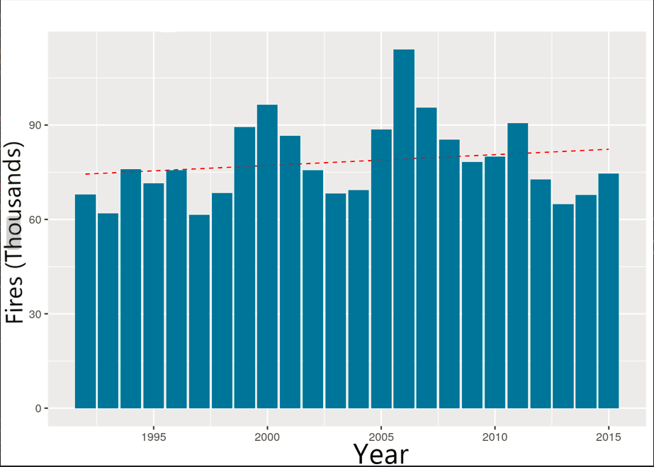
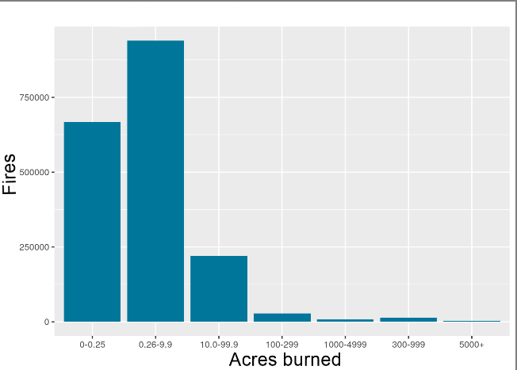
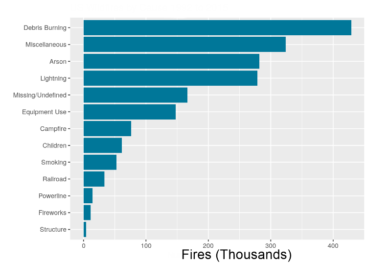
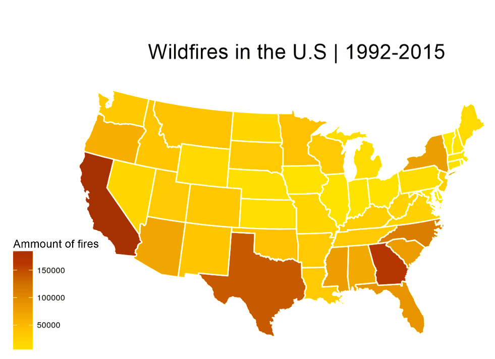

By River W.
Wildfires.
Yep - you most likely know about them. Whether its a first hand experience or on the television, they are sadly a common natural disaster all across the world.
In fact, they even pop up all the time in the U.S. resulting in thousands of americans needing evacuations or medical attention. After the "rouge" fire has eaten all of its fuel, all thats left is utter destruction in its path. How can we better understand how they work to prevent such disasters from happening?
To me, this raises a few big questions to pin-point the issue of wildfires:
What states in the U.S have the most wildfires?
What are the most common ways wildfires start?
and lastly,
How many acres do they usually effect?
To answer these questions, I retrieved some data that contained all wildfires in the U.S. from 1992 to 2015.
Right off the bat, I decided to graph the amount of fires per year to get a better understanding
of which years were worst than others.

Although, this does not tell us much to answer the questions, we can see that there is
a positive incline on the amount of wildfires the more time goes on. The graph also indicates that some years build up to high numbers of fires and dies back down to lower numbers - fluctuating every five years or so. Perhaps, this shows another factor such as droughts and dry years in play.
Okay cool! We took a look at the amount of fires, but what about the average size of land that they burn? Thankfully, the same dataset contained fire sizes with each fire entry. All I had to do was group the fires together with others of same size.

Voila!
As expected, it looks like wildfires stretching from 0.26 to 9.9 acres are most common with the most devastating being quite rare.
With that, I have found the answer to my third question... but what about the other ones?
Lets figure out how wildfires are commonly started. The dataset also contains who or what started the fire. Some fires are still under investigation for how they started so for that, I will categorize them as undefined.

By the looks of it, most cases wildfires are caused by Debris Burning with other miscellaneous somewhat far behind.
Sweet! We now figured out what causes create wildfires... Now all that is left is to figure out what states have the most fires.
For this, instead of just using graphs, I will be using the python library, Geopandas to better visualize what states are "Hot Spots"
The more red a state is, the more fires it has.

Not surprising, California and Texas are hotspots with Georgia being the curveball.
So there we have it! We have found all of the answers to the questions.
To sum it all up, we have found that the majority of wildfires are 0.26 to 9.9 acres in total burn area and are usually caused by debris burning. We also found that California, Texas and Georgia are hotspots to wildfires meaning most start there.
You may be asking "why does this matter?" and that is a valid point.
I believe by finding where the wildfires start, we can help minimize future disaster. By knowing the high-risk areas, perhaps we could bring more fire fighters and fire prevention/awareness programs showing how easy that can start into the area, we can stomp out the threat of fires for good.
As a counter argument, some may say that not all fires are made by humans - to which I agree, although even if the fire was made by a natural cause, having a quick reaction by the community could mean life or death in some cases.
That is why I believe these findings are both valid and actionable.
Thats all!
I hope you enjoyed.
Here is all of the data in one place!